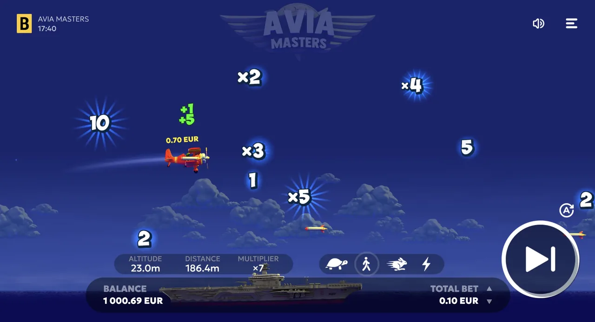

The rules, the cash-out mechanic, the RTP, and an honest take on
strategies and 'hacks'.
🔞 18+ only · Real-money
gambling
Aviamasters is simple to learn: place a bet, watch the multiplier
climb as the plane flies, and cash out before the round ends. This
guide covers the rules, the cash-out timing, the RTP, the risk
levels, and an honest look at 'strategies' and 'hacks', because the
RTP is fixed and nothing guarantees a win. 18+.
The Goal of Aviamasters
The aim is to cash out with a profit before the round ends. You
bet, a plane takes off, and a multiplier rises as it flies. Cash
out and you win your stake times the current multiplier. Do
nothing and eventually the round ends, taking your stake. That's
the whole game: a single, repeated decision about when to stop.
How to Play, Step by Step
Step 1: Choose your stake and your risk level (and, if offered,
set an auto-cash-out multiplier). Step 2: Start the round; the
plane takes off and the multiplier starts climbing. Step 3: Decide
as it rises: cash out to lock in bet x current multiplier, or hold
for a higher number. Step 4: If you cash out in time you keep the
winnings; if the round ends first you lose that stake. Repeat,
adjusting your stake and risk to your budget.
1💰
Set your stake & risk
Choose your bet and risk level, and if offered, preset an
auto-cash-out multiplier.
2✈
Start the round
The plane takes off and the multiplier begins to climb as it
flies.
3⚡
Decide as it rises
Cash out to lock in bet × the current multiplier, or
hold for a higher number.
4🏁
Win or lose the round
Cash out in time and you keep the winnings; if the round
ends first, that stake is gone.

Timing the cash-out: the multiplier climbs as the plane flies
RTP & How Payouts Work
Aviamasters runs at an RTP of 97%, which leaves a 3% house edge.
RTP is a long-run average measured across millions of rounds, not
a promise for your session, so short runs can swing well above or
below it. Every round is independent and random; nothing that
happened before changes the next result.
Risk Levels, Two Bets & Auto Cash-Out
Aviamasters gives you a few tools to manage risk. Cashing out
early keeps wins small but frequent; holding for high multipliers
is rarer and riskier. Many versions let you run two bets in a
single round (for example, bank one early and let the other ride)
and set an auto-cash-out that locks in at a multiplier you choose.
Try each approach in the
free demo first; there's no
'best' one, only what matches your risk comfort.
Risk vs reward: how your cash-out timing changes the odds
Lowlowcash out early ·
small, frequent wins
Balancedmidmid multipliers · more swings
Highhighchase big multipliers ·
rare, large wins
Chance the round ends before you cash outlow → high
The 97% RTP is the same whichever style you pick — how you
play changes volatility, not expected value. Aviamasters is a
low-volatility game capped at a x250 multiplier (max win
€250,000); Aviamasters 2 keeps the same RTP but raises the
ceiling to x1000.
Do Aviamasters Strategies Work?
No strategy changes the odds. The RTP is fixed and every round is
independent and random, so no betting pattern, sequence, or
'system' gives you an edge over time. What you can control is
bankroll management: choose a risk level you understand, set a
target and a loss limit before you start, keep stakes small
relative to your budget, and stop when you hit either limit.
That's risk control, not a way to beat the game.
The 'Aviamasters Predictor / Hack' Myth
Searches for an 'Aviamasters hack', 'predictor' or 'signals' app
are common, so be clear-eyed: none of them work. The game's
outcomes are random and can't be predicted or influenced by an
app. Most 'predictor' tools are scams designed to take your money,
steal your login, or push you to a clone site. Don't download
them, and don't pay for 'winning predictions'.
Bankroll & Responsible Play
Decide your budget before you play and treat it as the cost of
entertainment. Use small stakes relative to that budget, set a win
target and a loss limit, and walk away when you reach either.
Never chase losses by increasing your stake. If a session stops
being fun, stop.
Practise in the Free Demo
The safest way to learn the timing is with no money on the line.
Play the Aviamasters demo free,
try each risk level, and get a feel for when to cash out before
you ever deposit.
Aviamasters FAQ
How do you play Aviamasters?
Place a bet, then a multiplier rises as the plane takes off
and flies. Cash out before the round ends to win your bet
times the current multiplier. Wait too long and the round ends
with nothing. That's the whole game: timing your cash-out.
How does cash-out work in Aviamasters?
As the plane flies, the multiplier climbs and so does the risk
of the round ending. When you cash out, you lock in your bet
times the current multiplier. If the round ends before you
cash out, you lose that bet. Many versions also offer an
auto-cash-out you can preset.
What is the RTP of Aviamasters?
Aviamasters' RTP is 97%, which leaves a 3% house edge. RTP is
a long-run average across millions of rounds, not a
per-session guarantee. Every round is independent and random.
Is there a winning strategy for Aviamasters?
No strategy changes the odds: the RTP is fixed and every round
is random. What you can manage is your bankroll: pick a
difficulty you understand, set a target and a loss limit, and
stop when you hit either. That's risk control, not a winning
system.
Do Aviamasters hacks or predictors work?
No. 'Hacks', 'signals' and 'predictor' apps for Aviamasters
don't work, because the outcomes are random and can't be
predicted. Most are scams designed to take your money or
logins. Don't download them, and don't pay for 'winning
predictions'.
Play Responsibly
Aviamasters is a real-money game of chance, not a way to make
money. Play for entertainment only, set deposit and time limits
before you start, and never bet money you can't afford to lose.
You must be 18+ (or 21+ / the legal age in your country). If
gambling stops being fun or feels out of control, get free,
confidential help at
BeGambleAware.org,
GamCare, or the National Council on Problem Gambling (1-800-522-4700 in
the US).
We may earn a commission if you sign up through links on this page,
at no extra cost to you. It never affects our rankings or verdicts.
By
Ryan Murton, Growth & Product covering crash and casino games for 7
years. Last updated: 2026-07-13. See our editorial approach on the
About page.